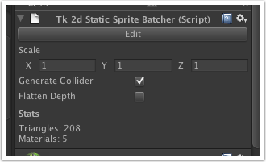

Documentation
Script Reference
Forum
Documentation
Script Reference
Forum

Edit/Commit - edit or commit the static sprite batcher.
Scale - scales the static sprite batcher by changing the geometry generated.
Generate Collider - when ticked, a mesh collider will be generated containing all other sprites.
Flatten Depth - when ticked, the z depth in your sprites will be collapsed, but the draw order will be retained.